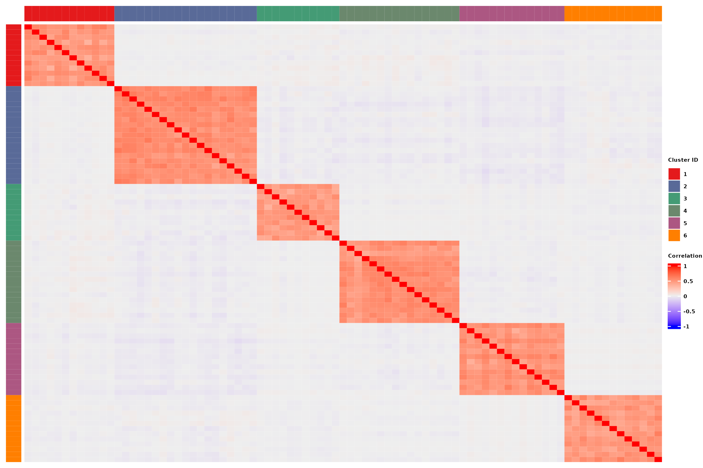
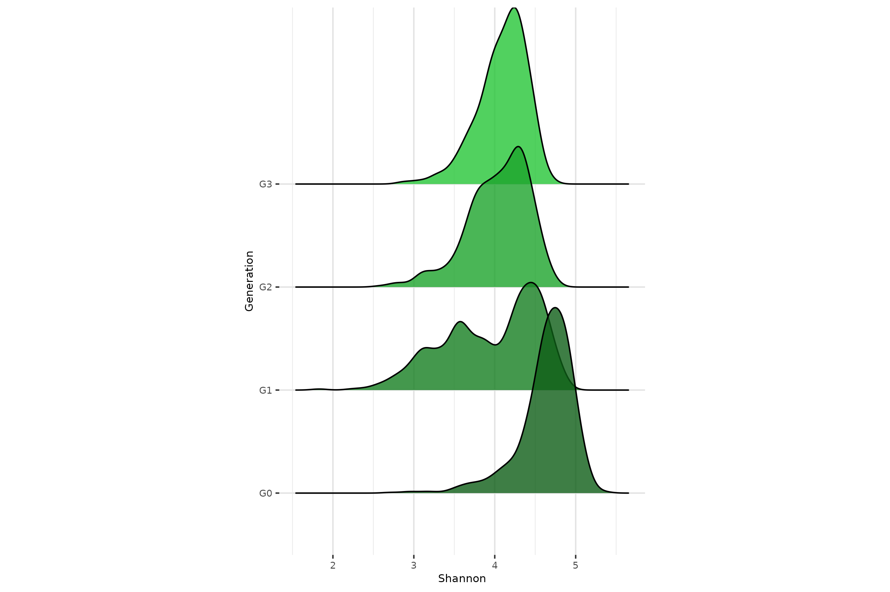
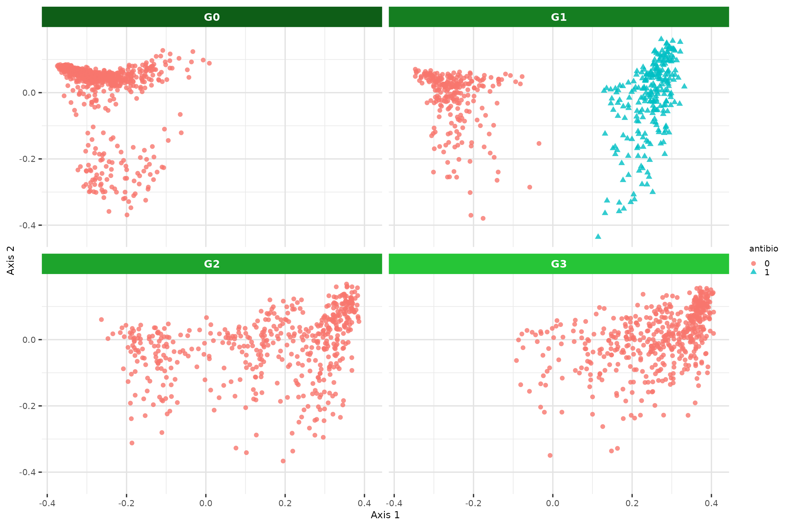
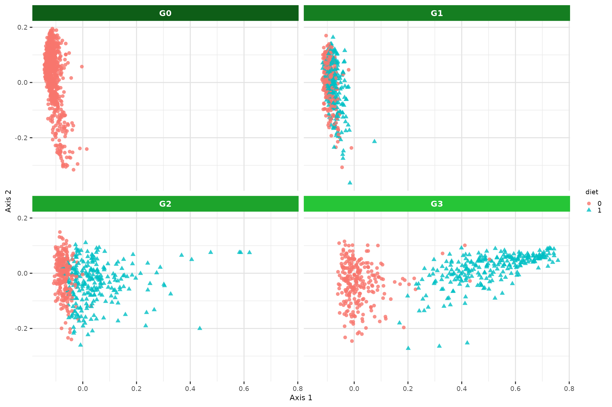
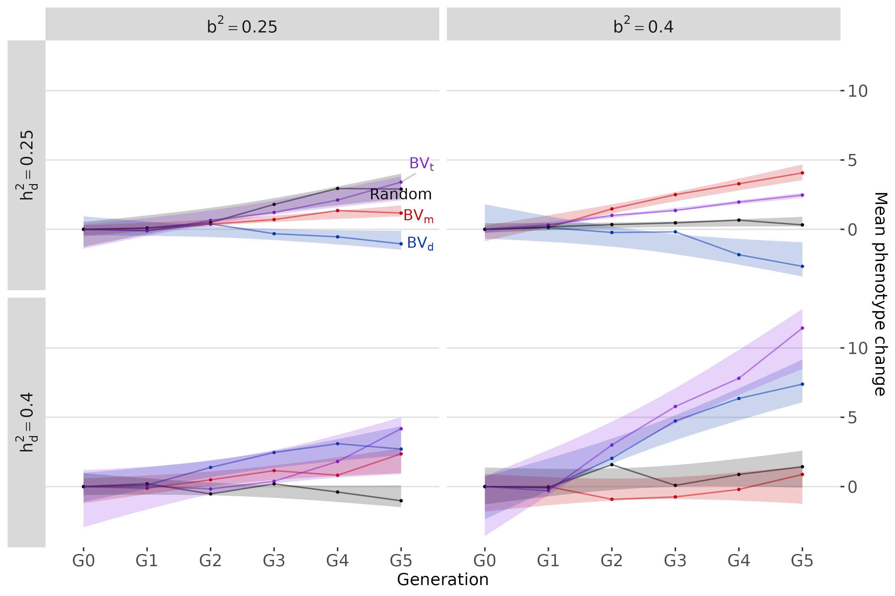
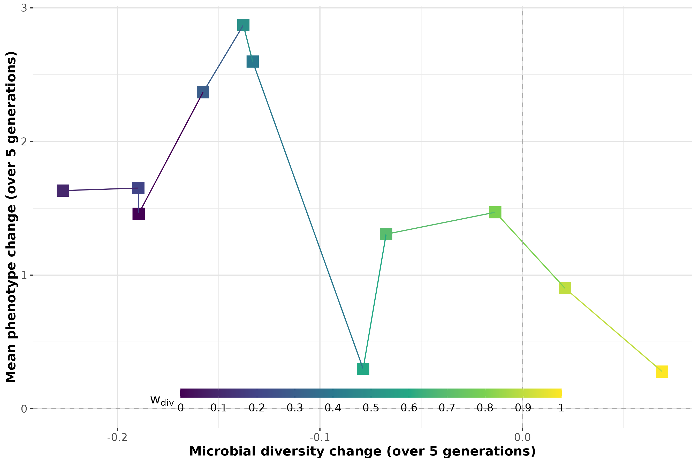

Generate figures
generate-figures.Rmd
library(RITHMS)In this vignette, we explore a large number of simulation scenarios to illustrate the capabilities and features of RITHMS. These results were obtained on the dataset described below. Further explanations are given in the article. RITHMS can account for a variety of selection strategies and is adaptable to different genetic architectures. We found that simulated data accurately preserved key characteristics across generations, notably microbial diversity metrics, exhibited the expected behavior in terms and correlation between taxa and of modulation of vertical and horizontal transmission, response to environmental effects and the evolution of phenotypic values depending on selection strategy.
library(magrittr)
library(MoBPS)
library(ComplexHeatmap)
library(circlize)
library(cowplot)
library(tidyverse)
library(ggrepel)
library(ggridges)
library(phyloseq)
library(ggh4x)
library(ggplot2)
library(peakRAM)
library(glue)To visualise changes over generations, we will use a green gradient :
greens_pal <- c("#6df17c","#2ede41","#26c537","#1da42c","#157e21","#0E5e17")General theme parameters for plots :
session_theme <- theme_minimal() + theme(panel.border = element_rect(colour= "white", fill = NA),
panel.grid.major = element_line(colour = "#e3e3e3"),
panel.grid.minor = element_line(colour = "#e9e9e9"),
axis.title = element_text(size = 8),
axis.text = element_text(size=7),
plot.title = element_text(size = 12),
legend.title = element_text(size = 7),
legend.text = element_text(size = 7),
legend.position = "none")
theme_set(session_theme)Load data
The data matrix loaded is the count matrix of taxa (in columns) across individuals (in rows). In our toy dataset, a subset from Déru et al. 2020, there are 1845 species and 780 individuals coming from the conventional diet. Genotypes are encoded as 0,1,2 and reachable thanks to “population” attribute.
data("Deru")
founder_object <- Deru
founder_object[1:5,1:5]
#> OTU1 OTU2 OTU6793 OTU3 OTU4
#> 1 30 593 4 630 414
#> 2 254 275 62 1131 446
#> 3 181 487 164 1472 656
#> 4 469 665 45 640 328
#> 5 771 519 21 758 347Simulation reflects structure of microbiome
This section matches code of Figure 3 of the paper.
Produce intra- and inter-cluster (anti)correlations
Through matrix, its values and the overlapping of QTL, we’re able to induce correlations between taxa.
For this example, 4% of the taxa are under genetic control. The pairwise correlation matrix of taxa abundances are represented here. Taxa are sorted based on the cluster they belong to.
taxa_assign_g_small <- assign_taxa(founder_object,
taxa_g = 0.04)
# Output is the assignation of each taxa to a cluster, 0 corresponds to taxa that are not under genetic control
taxa_assign_g_small[taxa_assign_g_small !=0 ]
#> [1] 1 1 1 2 1 1 2 1 3 4 3 4 3 2 2 2 4 3 2 5 2 2 2 4 3 3 2 3 4 3 3 1 6 6 1 6 4 4
#> [39] 6 1 5 5 1 5 4 4 1 5 3 3 4 2 6 4 6 5 5 4 6 6 6 2 3 5 1 5 5 5 5 5 6 6 4 4 4 5
#> [77] 4 3 6
#> Levels: 0 1 2 3 4 5 6Once you have these elements you’re able to call
holo_simu().
noise = 0.6 #noise of the microbiome
effect.size = 0.3 #genetic effect size
lambda = 0.5 #same weight for vertical and horizontal transmission
dir = T #dirichlet sampling for ambient microbiome
generations_simu <- holo_simu(h2 = 0.25, #direct heritability
b2 = 0.25, #microbiability
founder_object = founder_object,
n_clust = taxa_assign_g_small,
n_ind = 500, #per generation
verbose = F,
noise.microbiome = noise,
effect.size = effect.size,
lambda = lambda,
dir = dir,
selection = F, #30% males and females sampled for next generation
seed = 333)The
matrix is reachable through metadata of holo_simu()
output.
#Correlation intra-cluster for cluster under genetic control
beta <- generations_simu$metadata$Beta_matrix[taxa_assign_g_small != 0,]
cor_matrix <- cor(t(beta))
taxa_order <- taxa_assign_g_small[taxa_assign_g_small != 0] %>% order()
cor_matrix <- cor_matrix[taxa_order,taxa_order]Then we’re able to build our Heatmap using ComplexHeatmap
pal <- colorRampPalette(RColorBrewer::brewer.pal(5,"Set1"))(length(taxa_assign_g_small[taxa_assign_g_small != 0] %>% unique()))
clus_col <- structure(pal, names = taxa_assign_g_small[taxa_assign_g_small != 0] %>% unique() %>% as.vector())
leftAnn = rowAnnotation(clust = taxa_assign_g_small[taxa_assign_g_small != 0] %>% sort(),
col = list(clust = clus_col),
show_annotation_name = F,
annotation_legend_param = list(clust = list(title = "Cluster ID",title_gp = gpar(fontsize = 5, fontface = "bold"), labels_gp = gpar(fontsize = 5, fontface = 'bold'))))
colAnn = HeatmapAnnotation(clust = taxa_assign_g_small[taxa_assign_g_small != 0] %>% sort(),
col = list(clust = clus_col),
show_annotation_name = F,
show_legend = FALSE)
col_fun = colorRamp2(c(min(cor_matrix), 0, max(cor_matrix)), c("blue", "white", "red"))
p1 <- grid.grabExpr(draw(Heatmap(cor_matrix,
cluster_rows = F,
cluster_columns = F,
show_row_names = F,
show_column_names = F,
left_annotation = leftAnn,
top_annotation = colAnn,
col = col_fun,
heatmap_legend_param = list(title = "Correlation", title_gp = gpar(fontsize = 5, fontface = "bold"), labels_gp = gpar(fontsize = 5, fontface = 'bold')))))
plot_grid(p1)
Modulate relative importance of vertical and horizontal transmission
The composition of the microbiota of individuals are given by this equation : . Given this, corresponds to no vertical transmission. We’re looking here at the correlations between offspring α-diversity (from G2) and that of its mother (purple), father (orange) or ambient microbiota (green) for increasing values of λ.
set.seed(484)
#Change n_it to increase the accuracy of the function, n_it = 10 used in the article
n_it = 1
seed_value <- sample(c(100:9999),n_it)
params_df_it <- tibble::tibble(lambda = c(0,0.5,1)) %>%
crossing(tibble(seed = seed_value)) %>%
mutate(sim_ID = row_number(), .before = "lambda")We perform the taxa assignation for all this small study.
taxa_assign_g <- assign_taxa(founder_object)Then we have the following function that can be call in parallel for all the different scnarios in this test.
noise = 0.1
effect.size = 0.1
center_bg = T
dir = T
#Boxplot lambda vs diversity correlation with offspring
run_simulation_lambda <- function(i, it) {
generations_simu <- holo_simu(h2 = 0.25,
b2 = 0.25,
founder_object = founder_object,
n_clust = taxa_assign_g,
n_ind = 500,
verbose = F,
noise.microbiome = noise,
effect.size = effect.size,
lambda = as.numeric(params_df_it[i,"lambda"]),
dir = dir,
selection = F,
seed = as.numeric(params_df_it[i,"seed"]))
#Richness of G2 offsprings
current_div <- generations_simu$G2$microbiome %>%
richness_from_abundances_gen()
#Richness of offpsring's fathers
previous_s_div <- sapply(generations_simu$G2$pedigree[,"father"],
function(x){generations_simu$G1$microbiome[,x]}) %>%
richness_from_abundances_gen()
#Richness of offpsring's mothers
previous_d_div <- sapply(generations_simu$G2$pedigree[,"mother"],
function(x){generations_simu$G1$microbiome[,x]}) %>%
richness_from_abundances_gen()
#Richness of ambient microbiome
ambient_div <- generations_simu$G2$mean_microbiome %>%
richness_from_abundances_gen()
tibble(lambda = list(as.numeric(params_df_it[i,"lambda"])),
Mother = list(cor(current_div$Shannon,previous_d_div$Shannon)),
Father = list(cor(current_div$Shannon,previous_s_div$Shannon)),
Ambient = list(cor(current_div$Shannon,ambient_div$Shannon))
)
} If you want to parallelize the code, you could use
plan(multisession).
plan(sequential)
results <- future_map_dfr(
seq_len(nrow(params_df_it)),
function(i) {
map_dfr(seq_len(n_it), ~ run_simulation_lambda(i, .x))
}
)
plan(sequential)The useful information of these simulations are the microbiomes, the pedigree and the ambient microbiome that could be extracted for each generation. We’re focusing on G2 here.
long_cor_gen <- results %>%
mutate(lambda = unlist(lambda),
Mother = unlist(Mother),
Father = unlist(Father),
Ambient = unlist(Ambient)) %>%
pivot_longer(c("Mother","Father","Ambient"),
names_to = "cor_type",
values_to = "value")
lambda_label <- cbind(x = c(0,0.5,1),
y = c(0.8,0.2,0.8),
label = c("Ambient","Father","Mother")) %>% as.data.frame()
lambda_label$y <- as.numeric(lambda_label$y)
p3 <- long_cor_gen %>% summarise(value = mean(value), .by = c(lambda, cor_type)) |> ggplot(aes(x=as.factor(lambda),y=value,col=cor_type, group = cor_type)) +
geom_line() +
geom_point( alpha=0.8) +
geom_text_repel(data = lambda_label,
aes(x = x, y = y, label = label, color = label, group = NULL),
direction = "y",
show.legend = FALSE) +
theme(legend.key.size = unit(0.25, 'cm')) +
ylab("Correlation value") +
xlab("Lambda") +
labs(col = "Parents") +
guides(shape = "none") +
ylim(-0.2,1) +
scale_y_continuous(
breaks = seq(0,1,0.25),
labels = seq(0,1,0.25)
) +
scale_color_brewer(palette = "Dark2")
p3
Achieve a target distribution of taxa heritabilities
The function calibrate_gen_effect() is intended to guide
the user in choosing an appropriate effect size to achieve a target
distribution of taxa heritabilities. Build-in plots are in the function
but we’ve used the output of the function in order to make a density
plot of the distribution of taxa heritability for increasing genetic
effect sizes
(),
shown above each curve.
out_data <- gen_effect_calibration(founder_object = founder_object,
taxa_assign_g = taxa_assign_g,
correlation = 0.5,
effect.size = c(0.3,0.6,1),
plot = F)
# Calculate density peaks
density_peaks <- out_data %>%
group_by(effect.size) %>%
summarise(
peak = density(Heritability)$y[which.max(density(Heritability)$y)],
peak_x = density(Heritability)$x[which.max(density(Heritability)$y)]
)
p2 <- out_data %>% ggplot(aes(x=Heritability,fill=as.factor(effect.size), label = as.factor(effect.size))) +
geom_density(alpha=0.8, color = NA)+
geom_text_repel(
data = density_peaks,
aes(x = peak_x, y = peak, label = effect.size, color = as.factor(effect.size)),
nudge_x = 0.02,
nudge_y = 0.3,
direction = "y",
show.legend = FALSE) +
labs(x = "Taxa heritability",
y = "Density",
fill = "Genetic effect size")+
theme(panel.background = element_rect(fill="white"),
panel.grid.major = element_line(colour="#e3e3e3"),
panel.grid.minor = element_line(colour="#e9e9e9"),
axis.title = element_text(size = 8),
axis.text = element_text(size=7),
plot.title = element_text(size=7),
legend.position = "none") +
scale_fill_manual(values = c("#00AFBB", "#E7B800", "#FC4E07")) +
scale_color_manual(values = c("#00AFBB", "#E7B800", "#FC4E07"))
p2Alpha-diversity remains stable across generations
In a neutral framework, without selection of environmental effect, we
expect the
-diversity
to be stable across generations. From holo_simu() output,
the relative abundances of taxa,
-diversity
indexes thanks to multinomial sampling in
richness_from_abundances_gen() function.
h2 = 0.25
b2 = 0.25
generations_simu <- holo_simu(h2 = h2,
b2 = b2,
founder_object = founder_object,
n_clust = taxa_assign_g,
n_ind = 500,
verbose = F,
noise.microbiome = noise,
effect.size = effect.size,
lambda = 0.5,
dir = dir,
selection = F,
seed = 8082)
diversities_microbiomes <- generations_simu[-1] %>% map(get_microbiomes) %>% map(richness_from_abundances_gen) |> bind_rows(.id = "Generation")
p4 <- ggplot(diversities_microbiomes,aes(x=Shannon,y=Generation,fill=Generation)) +
geom_density_ridges(alpha=0.8) +
theme(aspect.ratio = 1.5)+
scale_fill_manual(values = rev(greens_pal))
p4
ggsave("../man/figures/ridges_shannon.png", p4, width = 9, height = 6)
Introduction of transient perturbations of the microbiota
In breeding and selection programs, it is essential to account for fixed environmental effects, given their strong role in modulating an individual’s phenotype. It is therefore important to verify that simulated transgenerational hologenomic data can correctly integrate such factors under a variety of plausible scenarios, such as short-term treatments or long-term diet effects.
To build this modulation, the user build outside the main function
the
product and choose precisely the values and the effect size given to
each environmental effect. Dimensions of this product should match the
founder_object ones.
To evaluate our simulation on that part we’ve computed a multidimensional scaling (MDS) of microbial abundance data using Bray-Curtis distances and ridges plot of Shannon index values.
This section matches code of Figure 4 of the paper.
Sporadic environmental effect
Half the individuals at G1 are subject to a sporadic antibiotic treatment which affects all taxa.
#Construction of environmental effect before simulating the population
h2 = 0.25
b2 = 0.25
noise = 0.6
effect.size = 0.3
dir= T
n_ind = 500
lambda = 0.5
set.seed(42)
antibio <- rep(0, n_ind)
antibio_ind <- sample(1:n_ind, 250) #selecting index of individuals
antibio[antibio_ind] <- 1
X <- matrix(antibio, ncol = n_ind, nrow = 1)
theta <- rnorm(ncol(founder_object),mean = 0, sd = 5) #sampling strong antibiotics effect
theta <- ifelse(theta > 0, -theta, theta) %>% matrix(ncol = 1, nrow = ncol(founder_object)) #only negative values for all taxa
thetaX <- theta %*% X
generations_simu_env <- holo_simu(h2 = h2,
b2 = b2,
founder_object = founder_object,
n_clust = taxa_assign_g,
n_ind = n_ind,
verbose = F,
noise.microbiome = noise,
effect.size = effect.size,
lambda = lambda,
dir = dir,
selection = F,
seed = 30,
thetaX = thetaX,
env_gen = c(T,F,F,F,F)) #on the five generations asked, we apply thetaX only on G1, not considering G0Diversity on antibiotic effect
Call to get_microbiomes() and
richness_from_abundances_gen() to extract all useful
metrics.
diversities_microbiomes <- generations_simu_env[-1] %>% map(get_microbiomes) %>% map(richness_from_abundances_gen) |> bind_rows(.id = "Generation")
p1 <- diversities_microbiomes %>% filter(!Generation %in% c("G4","G5")) %>%
ggplot(aes(x=Shannon,y=Generation,fill=Generation)) +
geom_density_ridges(alpha=0.8) +
theme(aspect.ratio = 1.5)+
scale_fill_manual(values = rev(greens_pal)[1:4])
p1
MDS on antibiotic effect
microbiomes_all <- generations_simu_env[c(2,3,4,5)] %>% map(get_microbiomes, transpose = T, CLR = F) |> bind_rows(.id = "Generation")
antibio_vec <- rep(0, nrow(microbiomes_all))
id_antibio_ind <- rownames(microbiomes_all)[which(microbiomes_all$Generation == "G1")] %in% colnames((generations_simu_env$G1$microbiome))[which(X != 0)]
antibio_vec[which(microbiomes_all$Generation == "G1")[id_antibio_ind]] <- 1
metadata <- cbind(Generation = microbiomes_all$Generation, ID = rownames(microbiomes_all), antibio = antibio_vec) |> as.data.frame()
rownames(metadata) <- metadata$IDCall to vegan package to compute Bray Curtis distance matrix.
dist_mat <- vegan::vegdist(x = microbiomes_all[-1],
method = "bray")Call to phyloseq
package to manipulate efficiently and compute MDS with
ordinate() function.
physeq <- phyloseq(
otu_table(t(microbiomes_all[,-1]), taxa_are_rows = TRUE),
sample_data(metadata))
ord <- ordinate(physeq, method = "MDS", distance = dist_mat)
DF <- plot_ordination(physeq, ord, justDF = T)
p2 <- ggplot(data = DF, aes(x=DF[,1], y=DF[,2], color = antibio, shape=antibio)) +
labs(x = "Axis 1",
y = "Axis 2") +
geom_point(alpha = 0.8) +
theme(legend.key.size = unit(0.25, 'cm'),
strip.text = element_text(color = "white", face = "bold")) +
facet_wrap2(~Generation, nrow = 2, ncol = 2, strip = strip_themed(background_x = elem_list_rect(fill = rev(greens_pal)[1:4])))
p2
Sustained environmental effet
Starting from G1, half the individuals at each generation (blue triangles) are subject to a diet favoring two clusters of taxa.
h2 = 0.25
b2 = 0.25
noise = 0.6
effect.size = 0.3
dir= T
center_bg = T
n_ind = 500
lambda = 0.5
set.seed(56)
# Xi <- small portions of individuals
diet <- rep(0, n_ind)
diet_ind <- sample(1:n_ind, 250)
diet[diet_ind] <- 1
X <- matrix(diet, ncol = n_ind, nrow = 1)
theta <- rep(0, length(taxa_assign_g))
cluster_diet <- table(taxa_assign_g)[table(taxa_assign_g) > 10 & table(taxa_assign_g) < 30] %>% sample(3) %>% names() %>% as.numeric() #sample of clusters modulated by diet
theta[taxa_assign_g %in% cluster_diet] <- rnorm(sum(taxa_assign_g %in% cluster_diet ),mean = 0, sd = 2)
theta <- ifelse(theta < 0, -theta, theta) %>% matrix(ncol = 1, nrow = length(taxa_assign_g))#Only positive values for all taxa
thetaX <- theta %*% X
generations_simu_env <- holo_simu(h2 = h2,
b2 = b2,
founder_object = founder_object,
n_clust = taxa_assign_g,
n_ind = n_ind,
verbose = F,
noise.microbiome = noise,
effect.size = effect.size,
lambda = lambda,
dir = dir,
selection = F,
seed = 3042,
thetaX = thetaX,
env_gen = c(T,T,T,T,T)) #Applied on all generations Diversity on diet effect
diversities_microbiomes <- generations_simu_env[c(2,3,4,5)] %>% map(get_microbiomes) %>% map(richness_from_abundances_gen) |> bind_rows(.id = "Generation")
p4 <- ggplot(diversities_microbiomes,aes(x=Shannon,y=Generation,fill=Generation)) +
geom_density_ridges(alpha=0.8) +
theme(aspect.ratio = 1.5)+
scale_fill_manual(values = rev(greens_pal)[1:4])
p4
MDS on diet effect
#Post-processing of the data
microbiomes_all <- generations_simu_env[c(2,3,4,5)] %>% map(get_microbiomes, transpose = T, CLR = F) |> bind_rows(.id = "Generation")
diet_vec <- rep(0, nrow(microbiomes_all))
diet_vec[which(microbiomes_all$Generation == "G1")[diet_ind]] <- 1
diet_vec[which(microbiomes_all$Generation == "G2")[diet_ind]] <- 1
diet_vec[which(microbiomes_all$Generation == "G3")[diet_ind]] <- 1
diet_vec[which(microbiomes_all$Generation == "G4")[diet_ind]] <- 1
diet_vec[which(microbiomes_all$Generation == "G5")[diet_ind]] <- 1
metadata <- cbind(Generation = microbiomes_all$Generation, ID = rownames(microbiomes_all), diet = diet_vec) |> as.data.frame()
rownames(metadata) <- metadata$ID
dist_mat <- vegan::vegdist(x = microbiomes_all[-1],
method = "bray")
physeq <- phyloseq(
otu_table(t(microbiomes_all[,-1]), taxa_are_rows = TRUE),
sample_data(metadata))
ord <- ordinate(physeq, method = "MDS", distance = dist_mat)
DF <- plot_ordination(physeq, ord, justDF = T)
p3 <- ggplot(data = DF, aes(x=DF[,1], y=DF[,2], color = diet, shape=diet)) +
labs(x = "Axis 1",
y = "Axis 2") +
geom_point(alpha = 0.8) +
theme(legend.key.size = unit(0.25, 'cm'),
strip.text = element_text(color = "white", face = "bold")) +
facet_wrap2(~Generation, nrow = 2, ncol = 2, strip = strip_themed(background_x = elem_list_rect(fill = rev(greens_pal)[1:4]))) +
scale_fill_manual(values = rev(greens_pal)[1:4])
p3
Fine selection of direct heritability, microbiability and selection schemes
In the absence of selection, we want to verify that the target values are reached and maintained across generations and then observe trends in phenotypic improvement as a function of four different selection strategies.
All the computation for both plots in this section are performed at the same time, the barplot is a subset of the facet grid.
This section matches code of Figure 5 of the paper.
Target values of direct heritability and microbiability are reached and maintained
# n_it = 50 was used to generate the figures of the article
n_it = 1
set.seed(42)
vec_seed <- sample(100:10000,n_it)
noise = 0.6
effect.size = 0.3
lambda = 0.1
dir = T
#For the exemple, not all values were computed, you can uncomment all the lines to obtain the complete figure.
params_df_it <- tibble::tribble(
~h2, ~b2,
# 0.05, 0.05,
# 0.25, 0.05,
# 0.4, 0.05,
# 0.05, 0.25,
0.25, 0.25,
0.4, 0.25,
# 0.05, 0.4,
0.25, 0.4,
0.4, 0.4
) |> crossing(tibble(`Selection Type` = c("GB", "G", "B", "None")),tibble(seed = vec_seed)) |>
mutate(sim_ID = row_number(), .before = "h2")
params_df <- tibble::tribble(
~h2, ~b2,
# 0.05, 0.05,
# 0.25, 0.05,
# 0.4, 0.05,
# 0.05, 0.25,
0.25, 0.25,
0.4, 0.25,
# 0.05, 0.4,
0.25, 0.4,
0.4, 0.4
) |>
crossing(tibble(`Selection Type` = c("GB", "G", "B", "Random"))) |>
mutate(sim_ID = row_number(), .before = "h2")
run_simulation <- function(i, it) {
start_time_it <- Sys.time()
ram_result <- peakRAM({
taxa_assign_g <- assign_taxa(founder_object)
selection = if (params_df$`Selection Type`[i] == "Random") FALSE else TRUE
generations_simu <- holo_simu(
h2 = params_df$h2[i],
b2 = params_df$b2[i],
founder_object = founder_object,
n_clust = taxa_assign_g,
n_ind = 500,
verbose = FALSE,
noise.microbiome = noise,
effect.size = effect.size,
lambda = lambda,
dir = dir,
selection = selection,
size_selection_F = if (selection == "FALSE") NULL else 0.3,
size_selection_M = if (selection == "FALSE") NULL else 0.3,
selection_type = if (params_df$`Selection Type`[i] == "Random") NULL else params_df$`Selection Type`[i],
seed = vec_seed[it]
)
})
gc() #clean memory
phenotypes_all <- generations_simu[-1] %>% map(get_phenotypes) |> bind_rows(.id = "Generation")
tibble(mean_phenotypes = list(generations_simu[-1] %>%
map(get_mean_phenotypes)),
metric_values = list(phenotypes_all %>%
group_by(Generation) %>%
summarise(h2 = var(gq)/var(y),
b2 = var(gb)/var(y),
e2 = 1 - var(gq)/var(y) - var(gb)/var(y)))
)
}If you want to parallelize the code, you could use
plan(multisession).
plan(sequential)
results <- future_map_dfr(
seq_len(nrow(params_df)),
function(i) {
map_dfr(seq_len(n_it), ~ run_simulation(i, .x))
}
)
plan(sequential)
metrics_values <- results %>%
bind_cols(params_df_it) %>%
filter(h2 == 0.25,b2 == 0.25) %>% #for barplot, gather only results for h2 = b2 = 0.25
select(metric_values) %>%
unnest_wider(metric_values) %>%
unnest_longer(c(Generation,h2,b2,e2)) %>%
group_by(Generation) %>%
summarize(h2 = mean(h2), b2 = mean(b2), e2=mean(e2)) %>%
pivot_longer(cols = c(h2, b2, e2), names_to = "Metric", values_to = "Value")
metrics_values$Metric <- factor(metrics_values$Metric, levels = c("e2","b2","h2"))
colours <- setNames(c("#ce0104", "#0237AE", "#808080"),
c("b2", "h2", "e2"))
p2 <- metrics_values |> ggplot(aes(x=Generation, y = Value, fill = Metric))+
geom_bar(stat = "identity") +
ylab("Value") +
theme(axis.text.y = element_text(vjust = seq(0, 1, length.out = 5)))+
geom_hline(yintercept = 0.25, col="white", linetype = 2) +
annotate("text", x = 3, y= 0.125, label=expression(bold(h[d]^2)), color = "white", size = 4) +
geom_hline(yintercept = 0.5, col="white", linetype = 2) +
annotate("text", x = 3, y= 0.375, label=expression(bold(b^2)), color = "white", size = 4) +
annotate("text", x = 3, y= 0.75, label=expression(bold(e^2)), color = "white", size = 4) +
scale_y_continuous(expand = expansion(0, 0)) +
scale_fill_manual(values = colours)
p2
Mean phenotype change across generations according to selection strategy
mean_phenotypes <- results %>%
select(mean_phenotypes) %>%
bind_cols(params_df_it) %>%
unnest_wider(mean_phenotypes)
phenotypes_longer <- mean_phenotypes %>%
pivot_longer(cols = matches("^G"), values_to = "Y mean", names_to = "Generation") %>%
summarise("Y sd" = sd(`Y mean`),
"Y mean" = mean(`Y mean`),
.by = c(`Selection Type`, Generation, h2, b2)) |>
mutate("Y mean" = `Y mean` - `Y mean`[Generation == "G0"], .by = c(`Selection Type`, h2, b2))
phenotypes_longer$`Selection Type` <- ifelse(phenotypes_longer$`Selection Type` == "GB","TBV", phenotypes_longer$`Selection Type`)
colours <- c(
B = "#ce0104",
G = "#0237AE",
TBV = "#8123d9",
None = "black"
)
custom_labeller <- labeller(
b2 = as_labeller(function(x) paste0("b^2 == ", x), label_parsed),
h2 = as_labeller(function(x) paste0("h[d]^2 == ", x), label_parsed)
)
labels <- phenotypes_longer |>
filter(h2 == 0.25, b2 == 0.25, Generation == "G5") |>
mutate(
label = recode(`Selection Type`,
B = "BV[m]",
G = "BV[d]",
TBV = "BV[t]",
None = "Random"))
p1 <- phenotypes_longer |>
ggplot(aes(x = Generation, y = `Y mean`, group = `Selection Type`, color = `Selection Type`)) +
geom_point(size = 0.5) +
geom_line(alpha = 0.5) +
geom_smooth(method = "lm", se = TRUE, linetype = 0, aes(fill = `Selection Type`), alpha = 0.2)+
geom_text_repel(data = labels,
aes(label = label), parse = T, hjust = -1, vjust = -0.8, direction = "y", segment.color = "grey80") +
labs(y = "Mean phenotype change") +
theme(panel.grid.major = element_line(colour="#e3e3e3"),
panel.grid.minor.y = element_blank(),
panel.grid.major.x = element_blank(),
panel.grid.minor.x = element_blank(),
strip.text = element_text(size=12)) +
facet_grid(rows = vars(h2),
cols = vars(b2),
drop = TRUE,
labeller = custom_labeller,
switch = "y") +
scale_y_continuous(position = "right") +
scale_color_manual(values = colours) +
scale_fill_manual(values = colours) +
coord_cartesian(clip = "off")
p1
For the selection criteria we have :
- Red line = Selection on microbiota
breeding values,
- Blue line = Selection on direct breeding
values,
- Purple line = Selection on total breeding
values,
- Black line = Random selection
Selection index based on a combination of trait and diversity metrics
As a first demonstration of the usefulness of RITHMS, we consider a practical case study of complex breeding program with a multi-trait objective: maximizing phenotypic change while perserving microbial -diversity.
This section matches code of Figure 6 of the paper.
#n_it = 25 was used to generate the figure of the article
n_it = 1
set.seed(40)
vec_seed <- sample(100:10000,n_it)
params_df <- tibble::tribble(
~div, ~TBV,
0, 1,
1, 0,
0.5, 0.5,
0.8, 0.2,
0.2, 0.8,
0.7, 0.3,
0.3, 0.7,
0.4, 0.6,
0.6, 0.4,
0.1, 0.9,
0.9, 0.1
) |> crossing(tibble(seed = vec_seed)) |>
mutate(sim_ID = row_number(), .before = "div") %>%
mutate(concatenated = glue("({div},{TBV})"))
noise = 0.6
effect.size = 0.3
lambda = 0.5For each iteration, we look at the diversity and the phenotype values.
run_simulation_study <- function(i, it) {
set.seed(as.numeric(params_df[i,4]))
taxa_assign_g <- assign_taxa(founder_object)
generations_simu <- holo_simu(h2 = 0.25,
b2 = 0.25,
founder_object = founder_object,
n_clust = taxa_assign_g,
n_ind = 500,
verbose = F,
noise.microbiome = noise,
effect.size = effect.size,
lambda = lambda,
selection = T,
dir = T,
size_selection_F = 0.3,
size_selection_M = 0.3,
selection_type = "div.GB",
w.param = c(as.numeric(params_df[i,2]), as.numeric(params_df[i,3])),
seed = as.numeric(params_df[i,4]))
tibble(mean_phenotypes_y = list(generations_simu[-1] %>%
map(get_mean_phenotypes) %>%
bind_rows(.id = "Generation")),
diversities_microbiomes = list(generations_simu[-1] %>%
map(get_microbiomes) %>%
map(richness_from_abundances_gen) |>
map(get_mean_diversity) %>%
bind_rows(.id = "Generation"))
)
}If you want to parallelize the code, you could use
plan(multisession).
plan(sequential)
results <- future_map_dfr(
seq_len(nrow(params_df)),
function(i) {
map_dfr(seq_len(n_it), ~ run_simulation_study(i, .x))
}
)
plan(sequential)We look at the differences for our two traits between the base population and the last generation but it could be any generation.
mean_phenotypes_y <- results$mean_phenotypes_y %>% bind_rows()
diversities_microbiomes <- results$diversities_microbiomes %>% bind_rows()
diff_y <- mean_phenotypes_y$G5 - mean_phenotypes_y$G0
diff_div <- diversities_microbiomes$G5 - diversities_microbiomes$G0
diff_data <- tibble(diff_y = diff_y,
diff_div = diff_div,
category = params_df$concatenated)
diff_data_concat <- diff_data %>% summarise(mean_div = mean(diff_div),
mean_y = mean(diff_y),
sd_div = (1.96 * sd(diff_div)/sqrt(n())),
sd_y = (1.96 * sd(diff_y)/sqrt(n())),
.by = c(category))
p <- diff_data %>%
mutate(w = str_remove_all(category, "\\(|,.*") |> as.numeric()) |>
ggplot(aes(y = diff_y, x = diff_div,
colour = w
)) +
geom_point(alpha = 0.4, shape = 20, size = 3) +
geom_point(data = diff_data_concat |> mutate(w = str_remove_all(category, "\\(|,.*") |> as.numeric()),
aes(y = mean_y, x = mean_div),
shape = 15, size = 5) +
geom_line(data = diff_data_concat |> mutate(w = str_remove_all(category, "\\(|,.*") |> as.numeric()),
aes(y = mean_y, x = mean_div, group = 1), show.legend = FALSE) +
geom_vline(xintercept = 0, linetype = 2, color = "darkgrey") +
geom_hline(yintercept = 0, linetype = 2, color = "darkgrey") +
theme(legend.key.size = unit(0.3, 'cm'),
legend.title = element_text(size = 12, face = "bold"),
legend.text = element_text(size = 10),
legend.position = "inside",
legend.position.inside = c(0.49, 0.02),
legend.justification.inside = c(0.5, 0),
legend.direction = "horizontal",
legend.box = "horizontal",
) +
labs(
y = "Mean phenotype change (over 5 generations)",
x = "Microbial diversity change (over 5 generations)",
colour = expression(w[div])
) +
scale_color_viridis_c(option = "D",
breaks = seq(0,1,0.1),
name = expression(w[div]),
labels = seq(0,1,0.1)) +
coord_cartesian(clip = "off") +
theme(legend.key.width = unit(25, "mm"),
legend.background = element_rect(fill = "transparent")) +
NULL
p
Future work
It would be interesting to extend the RITHMS model to :
(i) account for microbial interactions with a
non-diagonal covariance matrix for the noise component
of the taxa abundances,
(ii) allow for the inclusion of more complex environmental
effects,
(iii) allow for the use of semi-complete, rather than
fully paired, genomic and microbiota data to create the base population,
which would enable RITHMS simulations to be calibrated on a datasets for
which some samples lack genomic or microbiota data,
(iv) the use of RITHMS to alternative hologenomic
datasets, notably for a variety of species and experimental
designs, and additional use cases for the evaluation of complex breeding
schemes.
For any ideas or collaboration relating to the package, feel free to contact : solene.pety@inrae.fr